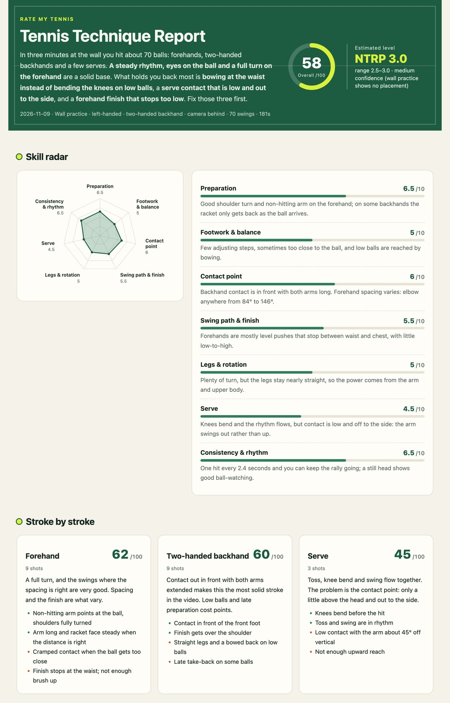
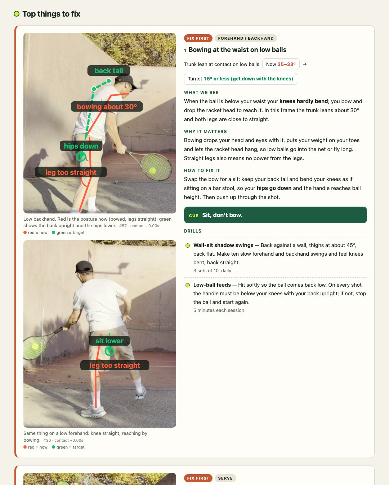

Example report · EnglishScores, annotated frames, animated fixes, drills
样例报告 · 中文评分、动作标注、动态纠正演示、练习方法


Install and source: github.com/dukesky/rate-my-tennis-skill
An open-source skill for AI assistants. These are real reports generated from a three-minute wall-practice video.
开源的 AI 网球教练技能：上传打球视频，得到一份图文并茂的技术报告。下面是用一段三分钟对墙练习视频生成的真实报告。


Install and source: github.com/dukesky/rate-my-tennis-skill